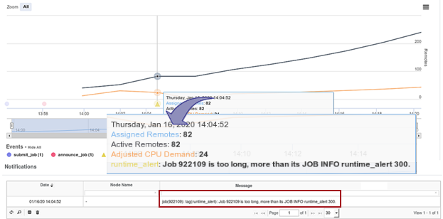
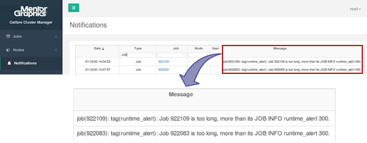

This procedure describes
how to set up a Tcl notification application for long‑running jobs using
job meta‑data from the JOB INFO keyword in the job.conf file.
Procedure
- Specify a runtime alert threshold per job using
the JOB INFO keyword in the job.conf file.
Units are in seconds.
JOB INFO runtime_alert=300
- Define a Tcl procedure in $CALCM_PLATFORM_INCLUDE
to access this information using non‑null default values. This is
necessary so that jobs without this value do not cause issues.
proc get_jobinfo_runtime_alert {jobObj} {
set jobinfo_dict [nemo::job attr $jobObj info]
set value [dict get $jobinfo_dict "runtime_alert"]
if { $value == {} } {
set value [expr 72*3600] ;# 72 hours alert by default
}
return $value
}
- Add the following definitions in the calcm_notification_app.tcl so that the notification is raised only once for the job,
not at every n cycles:
ATTRTRACKERS = {"runtime_alert,$jobID" 2 [expr [nemo::job duration $jobObj] > [get_jobinfo_runtime_alert $jobObj]] {$value == 1 && $pvalue == 0}}
JOBFILTERS = {evalAttr "runtime_alert,$jobID" {$count == 1} {tag(runtime_alert): Job $jobID is too long, more than its JOB INFO runtime_alert [get_jobinfo_runtime_alert $jobObj].}}
Results
The resulting notifications are shown in the CalCM
dashboard web application (login with user login or as root to see
all notifications).
Figure 1. Notification in CalCM Dashboard Job Detail Plot
You can easily view the jobs that raised a recent
runtime_alert.
Figure 2. Notifications Table in CalCM Dashboard